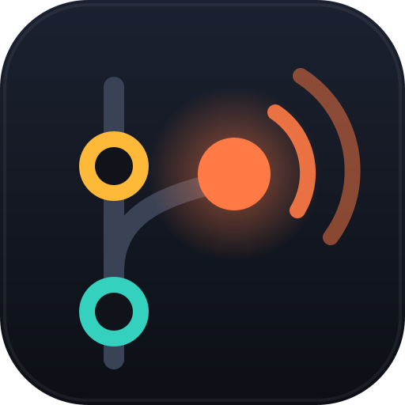

Repo Watch for Stream Deck
SimulationKnow when a repo changed since you last looked.
Push commits, publish a release, open an issue or a PR, break CI or add stars in the sandbox on the left. On the next check, the keys on the right light up. Press and hold them the way you would on a real Stream Deck.
Sandbox repositories
Pretend activity on two repos. Nothing here touches GitHub.
Your Stream Deck
What's simulated
The keys are drawn by the plugin's own rendering code, so they look exactly like the real thing. The repos, the polling, and the browser links are faked. On a real deck, pressing a key with changes opens the failed run, the new PR or issue, the compare view or the releases page in your browser.
Try it for real
- Create an empty public repo, e.g.
tracker-playground. - Add
you/tracker-playgroundto a Repo Tracker key and set Check every to 5 minutes. - Commit a file on github.com, or publish a release, and wait for the next check.
How it counts
When you add a repo, everything already there counts as seen. Failed CI, review requests, new PRs, new issues, releases and commits each get their own badge, most urgent first. Stars show when nothing else is new, and milestones get a celebration. Holding a key records the current state as seen.